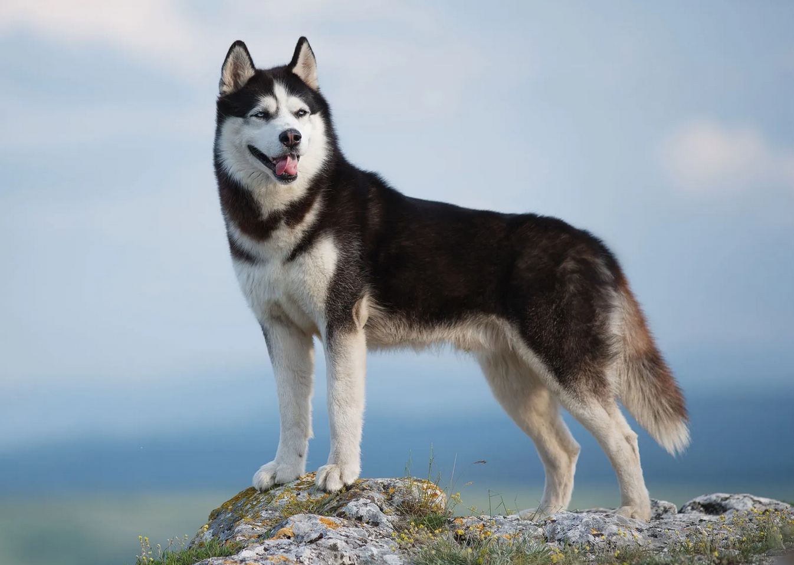

Hi! I'm a Full-Stack Software Engineer with 2 years of experience mainly using PHP, React and Javascript.
My goal as a human is to make the world a better place using technology.
Within the next 10 years, I want to be working on revolutionary AI that adds real value to a person's life.
The idea is to one day have a robot at every human's disposal that can help them do daily tasks like cooking.
In my spare time I like to stay active to offset sitting at a desk all day. I currently like hiking, axe throwing, and playing chess.
I also have a husky that forces me to leave the house.
